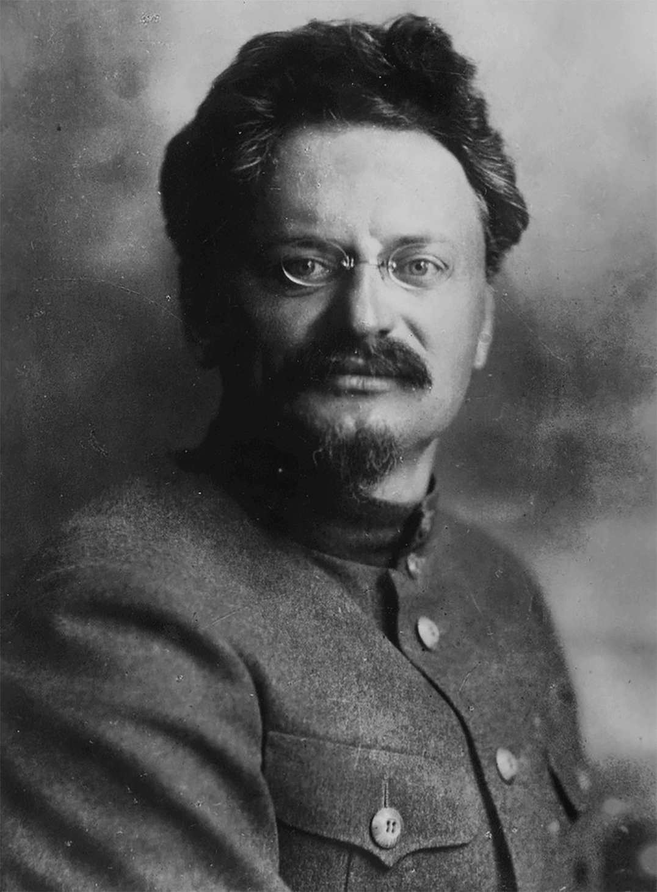
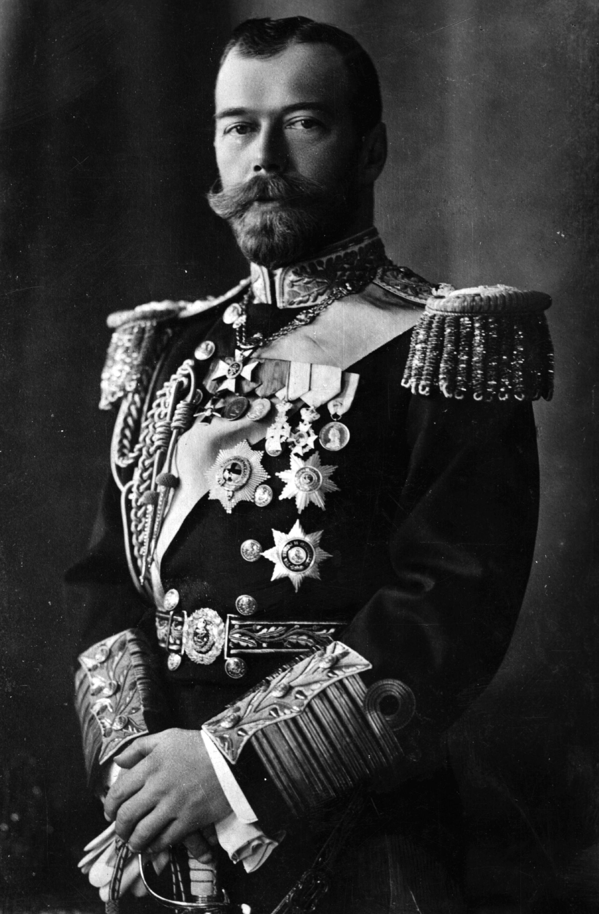

Włodzimierz Lenin
Główny Architekt Zmian
Urodzony jako Władimir Iljicz Uljanow. To on był niekwestionowanym liderem frakcji bolszewickiej i głównym ideologiem rewolucji październikowej. Wierzył, że Rosja jest gotowa na natychmiastowe przejście do socjalizmu.
- Zaplombowany pociąg: Lenin powrócił do Rosji ze Szwajcarii w kwietniu 1917 r. w specjalnym, zamkniętym pociągu udostępnionym przez... Niemców (którzy liczyli, że zdestabilizuje on Rosję).
- Tezy kwietniowe: Jego słynny program. To tam padły proste, ale radykalne hasła: "Cała władza w ręce Rad!" oraz "Pokój, Ziemia, Chleb!".
- Dyktatura Proletariatu: Lenin nie wierzył w demokrację parlamentarną. Stworzył system jednopartyjny, który utrzymał się przez kolejne 70 lat.

Lew Trocki
Praktyczny Organizator
Prawdziwe nazwisko to Lew Bronsztejn. Choć to Lenin był twarzą ideologiczną, to Trocki był geniuszem organizacyjnym, który technicznie zaplanował zbrojny zamach stanu w Piotrogrodzie.
- Komitet Wojskowo-Rewolucyjny: Trocki stanął na czele tego organu, który bezpośrednio wydał rozkazy zajęcia kluczowych punktów miasta (poczt, dworców, centrali telefonicznych).
- Twórca Armii Czerwonej: Po udanej rewolucji to on zorganizował armię, która zapewniła bolszewikom zwycięstwo w brutalnej wojnie domowej.
- Smutny koniec: Po śmierci Lenina przegrał walkę o władzę ze Stalinem, został wygnany i ostatecznie zamordowany w Meksyku w 1940 roku.

Car Mikołaj II
Ostatni z Romanowów
Rewolucja Październikowa nie obaliła Cara (zrobiła to Rewolucja Lutowa kilka miesięcy wcześniej), ale przypieczętowała jego ostateczny, tragiczny los.
- Kryzys władzy: Jego nieudolne dowodzenie w I wojnie światowej i wpływ Grigorija Rasputina na dwór carski doprowadziły imperium do ruiny i głodu.
- Abdykacja: W marcu 1917 roku Mikołaj zrzekł się tronu, kończąc ponad 300-letnie rządy dynastii Romanowów w Rosji.
- Egzekucja w Jekaterynburgu: W lipcu 1918 roku, z polecenia bolszewików, cała rodzina carska została rozstrzelana, aby zapobiec ich odbiciu przez "Białych".